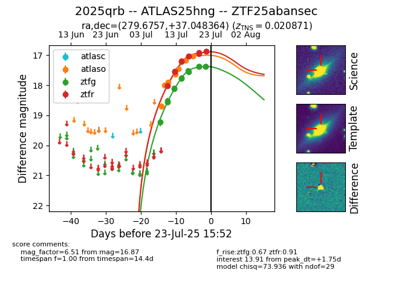

Target ZTF25abansec at 2025-07-23 15:52, see:
FINK: fink-portal.org/ZTF25abansec
Lasair: lasair-ztf.lsst.ac.uk/objects/ZTF25abansec
ALeRCE: alerce.online/object/ZTF25abansec
TNS: wis-tns.org/object/2025qrb
YSE: ziggy.ucolick.org/yse/transient_detail/2025qrb
alt names
ZTF25abansec (ztf,fink)
2025qrb (tns,yse)
ATLAS25hng (atlas)
coordinates:
equatorial (ra, dec) = (279.6757,+37.04836)
galactic (l, b) = (65.8553,+18.31102)
photometry
last atlaso=17.03, ztfg=17.38, ztfr=16.87
8 atlaso, 13 ztfg, 12 ztfr detections
